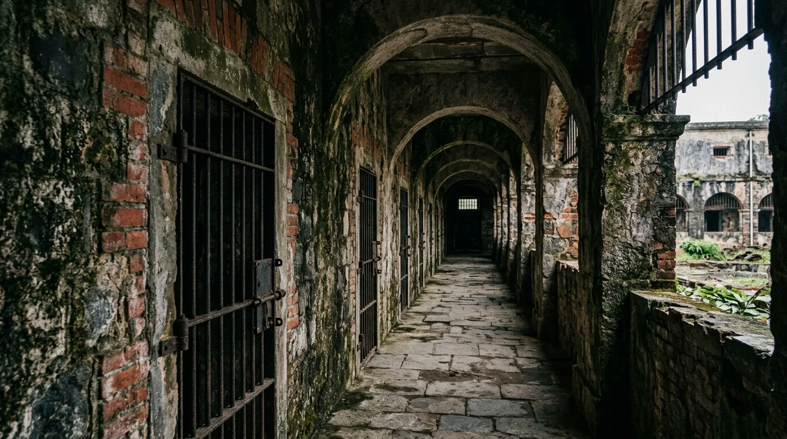

🏝️ 1. Tổng Quan & Vị Thế Côn Đảo
Nằm cách mũi Vũng Tàu 97 hải lý và cách cửa sông Hậu 45 hải lý về phía Đông Nam, quần đảo Côn Đảo gồm 16 hòn đảo lớn nhỏ với tổng diện tích đất nổi 76km², trong đó đảo lớn nhất là Côn Sơn (51,52km²). Nơi đây không chỉ là pháo đài tiền tiêu canh giữ chủ quyền biển đảo thiêng liêng phía Nam của Tổ quốc, mà còn là một địa danh mang hai thái cực độc nhất vô nhị: một bên là khúc tráng ca hào hùng, bi tráng của dân tộc Việt Nam, một bên là thiên đường sinh thái biển đảo hoang sơ, nguyên bản hàng đầu khu vực.
🏛️ Di sản kép của Quốc gia & Quốc tế:
• Di tích Lịch sử Quốc gia Đặc biệt: Hệ thống Nhà tù Côn Đảo được Thủ tướng Chính phủ công nhận theo Quyết định số 548/QĐ-TTg ngày 10/05/2012.
• Khu Ramsar Thế giới số 2.203: Vườn Quốc gia Côn Đảo là Khu Ramsar biển đầu tiên của Việt Nam, được Ban Thư ký Công ước Ramsar quốc tế chính thức công nhận ngày 18/06/2013 với diện tích bảo tồn gần 20.000 ha.
📍 2. Tám Tọa Độ Check-in & Dấu Ấn Lịch Sử Côn Đảo
Nhấp vào từng thẻ thắng cảnh bên dưới để chiêm ngưỡng bộ ảnh nghệ thuật AI độc quyền cùng những trang sử liệu hào hùng, tích xưa gắn liền với từng tấc đất, ngọn sóng Côn Đảo:
 Di tích Quốc gia Đặc biệt
Di tích Quốc gia Đặc biệt
📍 Đường Nguyễn Đức Thuận, Côn Đảo
Nghĩa Trang Hàng Dương & Mộ Cô Sáu
Quần thể nghĩa trang 190.000m² linh thiêng, nơi yên nghỉ của các bậc tiền bối Lê Hồng Phong, Nguyễn An Ninh và chị Võ Thị Sáu.
Chiêm ngưỡng & Xem sử tích →

Di tích Quốc gia Đặc biệt
📍 Trung tâm thị trấn Côn Đảo
Nhà Tù Côn Đảo & Chuồng Cọp
Chứng tích lịch sử 113 năm, nơi tôi luyện ý chí gang thép của hàng vạn chiến sĩ cách mạng yêu nước kiên trung bất khuất.
Chiêm ngưỡng & Xem sử tích →
 Bãi biển đẹp nhất Côn Đảo
Bãi biển đẹp nhất Côn Đảo
📍 Gần Sân bay Cỏ Ống, Bắc đảo
Bãi Đầm Trầu — Bãi Tắm Thiên Đường
Bãi cát vàng mịn màng uốn lượn dưới vách đá phủ bóng cây rừng nguyên sinh, điểm ngắm máy bay hạ cánh ngoạn mục nhất Việt Nam.
Chiêm ngưỡng & Xem sử tích →
 Danh lam thắng cảnh tâm linh
Danh lam thắng cảnh tâm linh
📍 Núi Một, huyện Côn Đảo
Chùa Núi Một (Vân Sơn Tự)
Điểm đến tâm linh thanh tịnh tựa lưng vào núi cao, ngắm trọn vẹn vịnh biển Côn Sơn trong xanh và đầm sen An Hải thơm ngát.
Chiêm ngưỡng & Xem sử tích →
 Khu Ramsar Biển Đầu Tiên VN
Khu Ramsar Biển Đầu Tiên VN
📍 Phía Đông đảo Côn Sơn
Hòn Bảy Cạnh & Mùa Rùa Đẻ Trứng
Vương quốc bảo tồn rùa biển lớn nhất Việt Nam, nơi lưu giữ hệ sinh thái rừng ngập mặn trên cạn và rạn san hô cổ xưa tuyệt mỹ.
Chiêm ngưỡng & Xem sử tích →
 Di tích Lịch sử Cấp tỉnh
Di tích Lịch sử Cấp tỉnh
📍 Khu dân cư số 3, Côn Đảo
Miếu Bà Phi Yến (An Sơn Miếu)
Ngôi miếu thờ người phụ nữ trung trinh tiết liệt, gắn liền với câu ca dao 'Gió đưa cây cải về trời / Rau răm ở lại chịu lời đắng cay'.
Chiêm ngưỡng & Xem sử tích →
 Tọa độ ngắm bình minh & hoàng hôn
Tọa độ ngắm bình minh & hoàng hôn
📍 Cung đường Đông Bắc đảo Côn Sơn
Mũi Chim Chim & Mũi Tàu Bể
Mỏm đá granite tự nhiên nhô thẳng ra lòng biển khơi, tuyệt tác thiên nhiên đón những vạt nắng bình minh và hoàng hôn tráng lệ.
Chiêm ngưỡng & Xem sử tích →
 Cung đường ven biển đẹp bậc nhất
Cung đường ven biển đẹp bậc nhất
📍 Tuyến ven biển Cỏ Ống – Bến Đầm
Cung Đường Ven Biển Côn Sơn
Cung đường ngoạn mục ôm trọn bờ vịnh xanh biếc, nối liền từ Sân bay Cỏ Ống qua trung tâm thị trấn đến Cảng Bến Đầm.
Chiêm ngưỡng & Xem sử tích →
✈️ 3. Hướng Dẫn Di Chuyển Từ Thủ Đô Hà Nội Đến Côn Đảo
Khoảng cách đường hàng không từ Hà Nội đến Côn Đảo khoảng 1.400km. Tùy theo thời gian và ngân sách, du khách từ Hà Nội có 3 phương án di chuyển thuận lợi và an toàn nhất hiện nay:
Phương án 1: Đường hàng không bay thẳng Hà Nội → Côn Đảo (Nhanh nhất)
- Lộ trình: Khởi hành từ Sân bay Quốc tế Nội Bài (HAN) bay thẳng đáp xuống Sân bay Côn Đảo (Cỏ Ống - VCS).
- Thời gian bay thẳng: Khoảng 2 giờ 15 phút (tiết kiệm tối đa thời gian di chuyển).
- Hãng khai thác: Các chuyến bay charter hoặc liên doanh khai thác bằng tàu bay phản lực thương mại đưa đón khách trực tiếp giữa Thủ đô và huyện đảo.
Phương án 2: Đường hàng không nối chuyến qua TP. Hồ Chí Minh / Cần Thơ
- Chặng 1: Bay từ Hà Nội (HAN) vào TP. Hồ Chí Minh (SGN) hoặc Cần Thơ (VCA) với thời gian bay ~2 giờ (hàng chục chuyến bay mỗi ngày của Vietnam Airlines, Vietjet Air).
- Chặng 2: Nối chuyến bay chặng ngắn từ SGN / VCA ra Sân bay Côn Đảo (VCS) với thời gian bay chỉ 45 – 50 phút (khai thác bởi VASCO / Vietnam Airlines bằng dòng máy bay ATR 72).
- Tổng thời gian hành trình: Khoảng 4 – 5 giờ (tính cả thời gian quá cảnh).
Phương án 3: Bay vào Miền Nam kết hợp Tàu cao tốc 5 sao vượt biển
Dành cho du khách muốn trải nghiệm ngắm nhìn biển Đông bao la và tiết kiệm chi phí vé máy bay chặng ngắn:
- Chặng bay: Hà Nội bay vào Cần Thơ hoặc TP. Hồ Chí Minh.
- Đón tàu cao tốc:
• Từ Cảng Trần Đề (Sóc Trăng): Đi tàu Côn Đảo Express vượt biển ra Cảng Bến Đầm Côn Đảo, thời gian chạy chỉ 2 giờ 15 phút (tuyến đường biển ngắn và êm nhất).
• Từ Cảng Cầu Đá (TP. Vũng Tàu): Đi tàu cao tốc Côn Đảo Express chạy thẳng ra Côn Đảo, thời gian chạy 3 giờ 30 phút.
• Từ Bến Ninh Kiều (Cần Thơ): Đi tàu Mai Linh Express qua sông Hậu ra biển đến Côn Đảo (khoảng 3 giờ 45 phút).
🎟️ 4. Bảng Giá Vé & Dịch Vụ Niêm Yết Chính Thức
Toàn bộ giá vé và mức phí được đối chiếu chính xác theo Nghị quyết của Hội đồng Nhân dân tỉnh Bà Rịa – Vũng Tàu và niêm yết công khai của Trung tâm Bảo tồn Di tích Côn Đảo cùng Ban Quản lý Vườn Quốc gia Côn Đảo:
| Khu vực / Điểm tham quan |
Giá vé niêm yết |
Ghi chú & Nguồn quy định |
| Quần thể Di tích Lịch sử Nhà tù Côn Đảo |
60.000 VNĐ / người |
Vé trọn tuyến tham quan Trại Phú Hải, Chuồng Cọp Pháp, Chuồng Cọp Mỹ, Nhà Chúa Đảo, Khu Chuồng Bò |
| Nghĩa trang Hàng Dương & Mộ Cô Sáu |
Miễn phí 100% |
Công trình tâm linh công cộng (mở cửa từ sáng đến nửa đêm phục vụ nhân dân dâng hương) |
| Miếu Bà Phi Yến (An Sơn Miếu) |
Miễn phí 100% |
Di tích Lịch sử - Văn hóa cấp tỉnh mở cửa tự do chiêm bái |
| Chùa Núi Một (Vân Sơn Tự) |
Miễn phí 100% |
Danh lam thắng cảnh Phật giáo mở cửa quanh năm |
| Cầu Tàu 914 & Cầu Ma Thiên Lãnh |
Miễn phí 100% |
Chứng tích lịch sử ngoài trời tự do tham quan |
| Vườn Quốc gia Côn Đảo (Tuyến 1 – 3) |
60.000 VNĐ / người lớn |
Tuyến tham quan sinh thái biển đảo: Hòn Tài, Hòn Bảy Cạnh, Hòn Cau (Sinh viên: 20k; Học sinh: 10k) |
| Vườn Quốc gia Côn Đảo (Tuyến 4 – 17) |
50.000 VNĐ / người lớn |
Tuyến trekking rừng nguyên sinh: Đầm Tre, Ma Thiên Lãnh – Sở Rẫy, Ông Đụng, Đất Thắm |
| Dịch vụ Hướng dẫn Xem Rùa Đẻ Trứng (Đêm) |
350.000 – 600.000 VNĐ / người |
Phí kiểm lâm hướng dẫn bảo tồn tại trạm Hòn Bảy Cạnh / Hòn Cau (tùy quy mô đoàn khách) |
| Dịch vụ Trải nghiệm Thả Rùa Con Về Biển |
50.000 VNĐ / người |
Hoạt động giáo dục môi trường buổi sáng tại các bãi ấp trứng rùa Vườn Quốc gia |
🥥 5. Cẩm Nang Ẩm Thực Đặc Sản Côn Đảo
Ẩm thực Côn Đảo mang đậm phong vị mặn mòi của biển cả và cây rừng nhiệt đới, gắn liền với những thức quà độc nhất vô nhị:
 Đặc sản trứ danh
Đặc sản trứ danh
Hạt Bàng Côn Đảo & Hải Sản Đại Dương
Thức quà kết tinh từ những cây bàng cổ thụ hàng trăm năm tuổi che mát khắp các nẻo đường di tích Côn Đảo, cùng nguồn hải sản tự nhiên tươi rói được đánh bắt từ ngư trường trù phú.
- Mứt Hạt Bàng (Rang Muối & Ngào Đường Gừng): Món đặc sản biểu tượng của Côn Đảo. Những quả bàng chín rụng được người dân nhặt về, phơi khô rồi dùng dao chẻ từng quả lấy nhân hạt nhỏ xíu bên trong. Hạt bàng rang giòn rụm, bùi béo ngậy, đượm chút vị mặn của muối hoặc vị ngọt thanh thơm lừng hương gừng cay ấm.
- Ốc Vú Nàng: Loài ốc biển hình chóp nón tựa bầu ngực thiếu nữ, vỏ màu đen xám, thịt bên trong trắng nõn giòn sần sật. Món ốc vú nàng hấp sả hoặc nướng mỡ hành chấm muối tiêu chanh ớt hiểm là món nhắm trứ danh xứ đảo.
- Cua Mặt Trăng: Loài cua quý hiếm sinh sống trong các khe đá san hô, trên mai có những đốm tròn màu đỏ thẫm như hình mặt trăng. Thịt cua ngọt đậm đà, gạch béo ngậy, ngon nhất khi luộc chín ăn nóng kèm muối tiêu chanh.
- Cá Thu Một Nắng: Cá thu tươi vừa cập cảng Bến Đầm được làm sạch, cắt khoanh dày rồi phơi duy nhất một nắng giòn rụm bên ngoài nhưng thớ thịt bên trong vẫn giữ nguyên vị ngọt mọng tự nhiên.
- Tôm Hùm Đỏ (Tôm Hùm Lửa): Tôm hùm tự nhiên của Côn Đảo có lớp vỏ đỏ au bắt mắt, thớ thịt săn chắc ngọt lịm, giàu canxi và đạm biển.
🗓️ 6. Thời Điểm Lý Tưởng & Quy Tắc Về Nguồn Thiêng Liêng
1. Hai mùa khí hậu đặc trưng tại Côn Đảo
- Tháng 3 – Tháng 9 (Mùa Biển Êm & Mùa Rùa Về Đẻ Trứng): Mùa du lịch đẹp nhất trong năm. Biển lặng sóng êm, trời trong xanh rực rỡ, thích hợp cho các hoạt động lặn ngắm san hô, tour ca nô đi các đảo nhỏ (Hòn Bảy Cạnh, Hòn Cau) và trực tiếp trải nghiệm xem rùa đẻ trứng lúc nửa đêm. Dù là mùa mưa nhưng các cơn mưa rào Côn Đảo thường chỉ kéo dài khoảng 30 – 45 phút rồi tạnh ráo ngay.
- Tháng 10 – Tháng 2 năm sau (Mùa Gió Chướng & Mùa Lễ Tri Ân): Mùa biển có sóng lớn do gió chướng thổi mạnh từ phía Đông Bắc. Tuy nhiên, vùng biển phía Tây và Tây Nam (như Bãi Đầm Trầu, Bến Đầm) vẫn lặng sóng. Thời tiết mùa này khô ráo, se mát, rất thích hợp cho những chuyến hành hương tâm linh về nguồn, viếng Nghĩa trang Hàng Dương và chiêm bái các đền chùa thanh tịnh.
⚠️ Quy tắc quan trọng khi du lịch Côn Đảo:
• Trang phục khi viếng di tích lịch sử & Nghĩa trang Hàng Dương: Côn Đảo là mảnh đất thiêng liêng đẫm máu xương của các anh hùng liệt sĩ. Khi đến viếng Nghĩa trang Hàng Dương (đặc biệt là lễ viếng mộ Cô Sáu ban đêm) và các trại giam, bắt buộc mặc trang phục kín đáo, lịch sự (quần dài, áo có tay), đi nhẹ nói khẽ, không đùa cợt cười nói to tiếng.
• Đồ lễ dâng hương cô Sáu: Chuẩn bị hoa tươi màu trắng (đặc biệt là hoa lê-ki-ma hoặc hoa cúc trắng), hương thơm, gương lược, áo bà ba trắng và trái cây tươi. Du khách nên tự dọn dẹp khay lễ sau khi dâng hương để giữ gìn vệ sinh chung.
• Nghiêm cấm xâm phạm tài nguyên Vườn Quốc gia: Côn Đảo áp dụng luật bảo tồn thiên nhiên cực kỳ nghiêm ngặt. Tuyệt đối không bẻ san hô, không nhặt vỏ ốc, vỏ sò, không mang rùa con hay bất kỳ mẫu vật động thực vật tự nhiên nào ra khỏi đảo; giữ gìn vệ sinh biển đảo không rác thải nhựa.